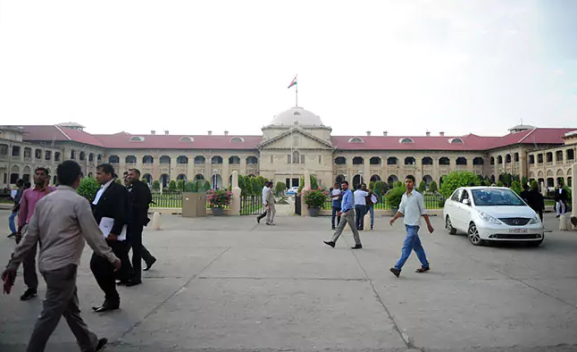

Re-Evaluate PCS Prelims Answer Sheets: Allahabad High Court Directs UPPSCNEW DELHI: The Allahabad High court today directed the UPPSC to conduct re-evaluation of the answer scripts of the PCS preliminary examination held in last September. Uttar Pradesh Public Service Commission (UPPSC) conducted this preliminary examination for recruitment in upper subordinate services for which advertisement was issued on February last year and court in is verdict today, denied to direct hold fresh preliminary examinations.  According to the Hindustan Times, the court said the candidates who qualify the preliminary exam after revaluation would be allowed to appear for the UPPSC PCS main examination. The court also said that any candidate becomes ineligible after revaluation would not be allowed to participate in the selection process. The judgement in this regard was passed by a two-judge bench comprising Justices Pankaj Mithal and Saral Srivastava of Allahabad High Court after hearing several petitions filed by more than hundreds of candidates who have alleged that answers to several of the questions asked in UPPSC PCS preliminary exam were incorrect. Business Standard reported that the court directed the Commission to re-evaluate the answer scripts of the preliminary examination of all the candidates by deleting question numbers 67/140/44/106 of series A, B, C and D respectively; and by giving full marks for question numbers 121/44/98/10 of series A, B, C and D respectively to those candidates who have exercised options '(c)' or '(d)'. The UPPSC notification invited applications for 251 vacancies, which was later increased to 677 posts, of the Upper Subordinate Services in the state and Hindustan Times reported that more than 4,55,290 candidates registered for the exam. UPPSC conducted the prelims on September 24, 2017, in which 2,46,654 candidates appeared, reported HT. As per the official UPPCS notification, the exam was held at 21 districts: Allahabad, Lucknow, Varanasi, Azamgarh, Faizabad, Gorakhpur, Jaunpur, Sitapur, Shahjahanpur, Bareilly, Muradabad, Meerut, Rae Bareilly, Ghaziabad, Jhansi, Kanpur, Etawah, Agra, Mainpuri, Mathura and Barabanki. When the prelims results were declared, a total of 14,032 candidates were declared eligible for the main examination, which was scheduled to be held from May 17, 2018. In another development, the Allahabad High Court on February 7 reserved its judgment on UPPSC petition challenging the CBI inquiry into the selections made by it between April 2012 and March 2017. |
RRB Recruitment 2018: Last Date To Register On March 31; 25 Million Applications Received So Far
NEW DELHI: The last date to apply for one of the largest government job recruitments comes to a close tomorrow. The last date to register for the jobs advertised by Railway Recruitment Board is March 31, 2018. The recruitment drive is for 89409 vacancies in Group C Level I (Erstwhile Group D) and Level II Categories. Group C Level II include posts like assistant loco pilots, technicians (fitter, crane driver, blacksmith, and carpenter) and Group C Level I (Erstwhile Group D) includes posts like track maintainer, points man, helper, gateman and porter.
As per reports, more than 25 million candidates have applied for 89409 posts advertised. RRB has advertised for recruitment after four years. Railway currently employs 1.3 million people has not recruited in the last couple of years and has now begun to feel the attrition.
RRB Recruitment Selection Process
For the post of ALP/Technician, Computer Based Test (CBT) will be conducted in two stages. The first stage CBT will be of 60 minutes duration and will have 75 questions. The question paper will have questions from Mathematics, General Intelligence and Reasoning, General Science, and General Awareness on current affairs. The second stage CBT will have two parts.
The duration for the second stage CBT will be 2 hours and 30 minutes. For part A, 90 minutes will be given. Part A will have questions from Mathematics, General Intelligence and Reasoning, Basic Science and Engineering, and General Awareness on Current Affairs. For Part B, 60 minutes duration is allotted. This part is qualifying in nature and shall have questions from the trade syllabus prescribed by Director General of Employment & Training (DGET).
|
DMRC Recruitment 2018: Admit Card Released For CBT Exam In April; Check DetailsNEW DELHI: Delhi Metro Rail Corporation (DMRC) has released admit cards for the recruitment exam which will be conducted for various posts in April 2018. The registration for the recruitment exam had started in January 2018. The last date for the submission of online application for recruitment notice No. DMRC/OM/HR/I/2018 (For SC/ST Candidates) and recruitment notice no. DMRC/OM/HR/II/2018 was March 12, 2018. The exams have been scheduled from April 9 to April 20, 2018. The exam will be conducted in online mode. Along with the admit cards, DMRC has also released the exam schedule for the advertised posts. For the posts of Assistant Manager (Finance, Corporate Communication, Legal, and Safety), Station Controller/ Train Operator, Maintainer - Electronic Mechanic, Stenographer, Account Assistant, and Office Assistant, the Computer Based Test will be conducted on April 20, 2018 in the second shift. The Computer Based Test for Assistant Manager, Junior Engineer, Assistant Programmer, Legal Assistant, Fire Inspector, Librarian, Maintainer, Office Assistant, and Store Assistant, have been scheduled from April 9 to April 20, 2018 and will be conducted in three shifts. The detailed schedule is available on the DMRC website. How to download DMRC Admit Card 2018? Step one: Go to official DMRC website: www.delhimetrorail.com Step two: Click on The Careers tab. Step three: Click on the Download Admit Card. Step four: Enter your user id and password. Step five: Submit and download the admit card. |
 RRB Recruitment 2018: Application Closes Tomorrow; Checklist For Applicants
RRB Recruitment 2018: Application Closes Tomorrow; Checklist For Applicants